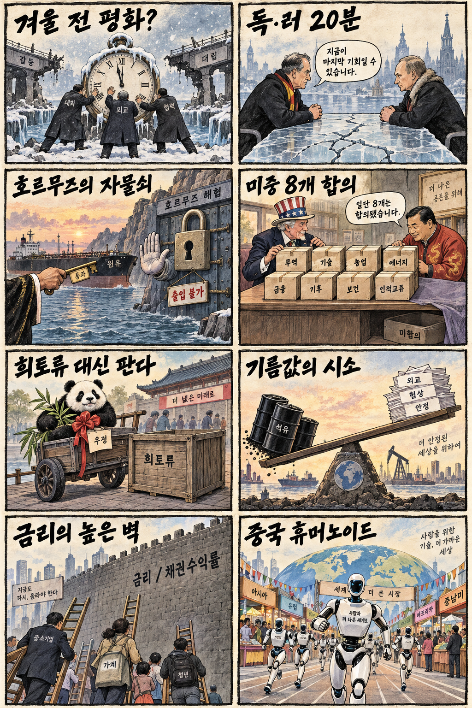
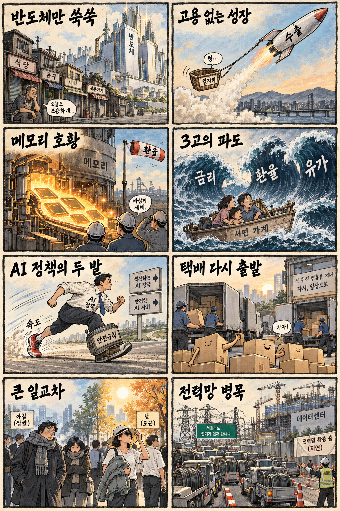

01
마이크로소프트 · 499.04→516.17달러 · +3.43%
내용요약 시가 대비 3.41% 올라 조사 종목 중 가장 강했습니다. 대형 소프트웨어주의 상대강도가 지수 상승을 뒷받침했습니다.
예상여파 국내 소프트웨어·클라우드 심리에는 우호적이지만 장기금리 상승이 밸류에이션 상단을 제한할 수 있습니다.
MORNING_BRIEFING_20260927
작성 시각: 2026-09-27 06:38 KST · 직전 미국 정규장과 2026-09-27 KST 당일 공개 기사 기준
직전 미국 정규장인 9월 25일 뉴욕증시는 다우 +0.93%, S&P 500 +0.51%, 나스닥 +0.48%로 동반 상승했습니다. 미·이란 협상 기대에 국제유가가 하락하며 물가 부담을 덜었고, 필라델피아 반도체지수도 1.4% 올랐습니다. 다만 미 10년물 금리 5.22% 돌파는 성장주 밸류에이션의 상단을 누르는 변수입니다. 한국 증시는 일요일 휴장으로 즉시 반영되지 않으므로 재개장 때 연휴 중 누적 변수를 함께 소화할 가능성에 대비합니다.
| 지수 | 종가 | 등락률 | 한국 증시 시사점 |
|---|---|---|---|
| 다우존스 | 51,828.62 | +0.93% | 유가 하락과 경기민감주 회복, 금리 상단 함께 점검 |
| S&P 500 | 7,743.41 | +0.51% | 유가 하락과 경기민감주 회복, 금리 상단 함께 점검 |
| 나스닥 종합 | 27,068.72 | +0.48% | 반도체 강세는 우호적이나 장기금리 부담 병존 |
다우 +0.93%, S&P 500 +0.51%, 나스닥 +0.48%로 마감했습니다.
미·이란 협상 기대에 국제유가가 2%대 내려 원가 부담을 낮췄습니다.
미 10년물 5.22% 돌파는 성장주와 고부채 업종의 할인율 부담입니다.
일요일 휴장으로 당일 시가 진입과 동일 조건 성과검증이 불가능합니다.
9월 26일 보고서는 추석 휴장으로 공식 추천을 내지 않았습니다. 게시 당시 판단을 유지하며 사후 종목을 추가하지 않습니다.
| 시장 | 종가 | 등락률 | 기준 |
|---|---|---|---|
| KOSPI | 7,080.92 | +0.90% | 최근 거래일 9월 23일 · 오늘 일요일 휴장 |
| KOSDAQ | 844.48 | +1.21% | 최근 거래일 9월 23일 · 오늘 일요일 휴장 |
| 다우존스 | 51,828.62 | +0.93% | 미국 9월 25일 정규장 |
| S&P 500 | 7,743.41 | +0.51% | 미국 9월 25일 정규장 |
| 나스닥 종합 | 27,068.72 | +0.48% | 미국 9월 25일 정규장 |
마이크로소프트가 시가 대비 +3.41%로 조사 종목 중 가장 강했습니다.
슈퍼마이크로 +2.96%, 어플라이드 머티리얼즈 +1.28%로 강했습니다.
테슬라가 시가 대비 -3.32%로 조사 종목 중 낙폭이 가장 컸습니다.
인텔 -3.06%, 크라우드스트라이크 -2.84%로 차별화 약세였습니다.
내용요약 시가 대비 3.41% 올라 조사 종목 중 가장 강했습니다. 대형 소프트웨어주의 상대강도가 지수 상승을 뒷받침했습니다.
예상여파 국내 소프트웨어·클라우드 심리에는 우호적이지만 장기금리 상승이 밸류에이션 상단을 제한할 수 있습니다.
내용요약 시가 대비 2.96% 상승하며 인공지능 서버 관련 수요 기대를 반영했습니다.
예상여파 국내 서버 부품·냉각·전력 공급망 관심을 높일 수 있으나 고변동 종목의 단기 추격은 피해야 합니다.
내용요약 시가 대비 1.50% 올라 대형 기술주 가운데 견조한 흐름을 보였습니다.
예상여파 소비 전자와 부품 공급망 심리에 긍정적일 수 있지만 환율과 제품 수요의 실제 확인이 필요합니다.
내용요약 시가 대비 3.32% 하락해 조사 종목 중 낙폭이 가장 컸습니다. 공개 시세만으로 단일 원인을 단정하지 않습니다.
예상여파 전기차·이차전지 테마의 위험선호를 낮출 수 있어 재개장 시 동종업종의 상대강도를 확인해야 합니다.
내용요약 시가 대비 3.06% 하락해 미국 반도체지수 상승과 달리 종목 차별화가 나타났습니다.
예상여파 반도체 업종 전체 강세를 개별 종목에 일괄 적용하기보다 제품·실적·수급을 분리해 봐야 합니다.
오늘 국내 증시는 일요일로 휴장합니다. 최근 거래일 KOSPI는 7,080.92로 전일 종가 대비 +0.90% 올랐지만 시가 대비로는 -1.02% 밀렸습니다. 미국 3대 지수 상승, 반도체지수 +1.4%, 유가 하락은 재개장 심리에 우호적입니다. 반면 미 10년물 5.22%와 연휴 중 누적 갭은 부담입니다. 좋은 재료와 좋은 진입가격을 구분하고 재개장 초반 급등 종목의 추격매수를 피합니다.
오늘은 추천 없음 — 현금 관망
일요일 휴장으로 당일 시가 진입 기준, 호가 유동성, 장중 수급을 확인할 수 없습니다. 따라서 종합점수 75점, 1일 상승확률 60%, 예상 손익비 1.5의 문턱을 적용할 공식 후보를 제시하지 않습니다.
관심 연결종목 반도체·인공지능 서버·전력망은 재개장 이후 상대강도 관찰 대상일 뿐 매수 추천이 아닙니다. 연휴 재료만 보고 시초가 갭을 추격매수하지 않습니다.
당일 시가·수급이 없으므로 신규 추천과 성과 비교를 중단합니다.
장기금리 고점이 기술주와 원·달러 환율에 미치는 영향을 봅니다.
유가 하락을 만든 협상 기대가 실제 원유 수출 재개로 이어지는지 봅니다.
관세·기술통제·공급망의 구체 합의가 나오는지 확인합니다.
핵심 요약: 반도체 공급망의 가격 인상과 인공지능 메모리 실적 기대가 커지는 동시에 경쟁의 무대는 에이전트 하드웨어, 로봇 행동 데이터, 사이버 사고 거버넌스로 넓어지고 있습니다. 성장 속도만큼 원가·환율·보안 통제의 완성도가 중요합니다.
내용요약 원료에서 웨이퍼와 완제품 칩까지 반도체 공급망 전반으로 가격 인상이 번지고 있다는 당일 산업 보도입니다.
예상여파 메모리 업황과 제조사 채산성에는 우호적일 수 있지만 전자제품·서버 원가 상승과 수요 둔화 가능성을 함께 봐야 합니다.
내용요약 메타가 인공지능 에이전트와 자체 하드웨어를 묶어 플랫폼 자립을 추진하는 전략을 다룬 당일 보도입니다.
예상여파 에이전트 경쟁이 모델 성능을 넘어 단말·유통·데이터 통제력으로 확장되며 생태계 투자비가 커질 수 있습니다.
내용요약 인공지능 메모리 수요에 힘입어 국내 대형 반도체 기업의 3분기 최대 실적 가능성과 환율 변수를 짚은 당일 보도입니다.
예상여파 고대역폭 메모리와 D램 가격은 실적을 지지하지만 원화 강세와 높은 기대치는 주가 변동성을 키울 수 있습니다.
내용요약 로봇 기업들이 세탁물 정리와 조리 같은 실제 작업 영상을 사들이며 학습 데이터 확보에 나섰다는 당일 보도입니다.
예상여파 피지컬 인공지능 경쟁력이 하드웨어뿐 아니라 양질의 행동 데이터와 저작권·개인정보 관리에 좌우될 수 있습니다.
내용요약 미국 상원에서 인공지능 기반 사이버 사고를 독립 조사하는 위원회 법안이 발의됐다는 당일 보도입니다.
예상여파 기업은 인공지능 보안 사고의 기록·보고·감사 체계를 강화해야 하며 보안 거버넌스 시장이 확대될 수 있습니다.
핵심 요약: 우크라이나 전쟁을 둘러싼 대화 채널이 다시 움직이고 미중 회담의 세부 이행이 시험대에 올랐습니다. 반면 호르무즈 재개방 제안 거절은 최근 유가 안정 기대를 되돌릴 수 있어 외교 발언과 실제 합의를 구분해야 합니다.
내용요약 미국 대통령이 겨울 전 러시아·우크라이나 합의를 예상한다고 밝힌 당일 보도입니다.
예상여파 협상 기대는 에너지·곡물 위험 프리미엄을 낮출 수 있지만 휴전 조건과 당사국 이행이 확인되기 전까지 변동성이 남습니다.
내용요약 독일과 러시아 외무장관이 우크라이나 전쟁 이후 처음 만나 대화했다는 당일 보도입니다.
예상여파 유럽의 외교 채널 복원 신호지만 짧은 회동이 제재·안보 구조의 실질 변화로 이어지는지는 별도 확인이 필요합니다.
내용요약 이란의 호르무즈 해협 재개방 제안을 미국이 거절했다는 당일 보도입니다.
예상여파 최근 유가 하락을 만든 협상 기대가 약해질 경우 원유·해운·항공 비용의 변동성이 다시 커질 수 있습니다.
내용요약 미중 정상회담 발표문에 포함된 합의와 빠진 쟁점을 비교한 당일 결산 보도입니다.
예상여파 관세 완화 기대와 별개로 첨단기술·희토류·공급망의 세부 이행 문구가 시장 신뢰를 좌우할 수 있습니다.
내용요약 중국 휴머노이드 산업이 세계 시장을 넓히기 위해 갖춰야 할 기술·비용·생태계 조건을 짚은 당일 보도입니다.
예상여파 로봇 공급망 경쟁은 빨라지지만 안전성, 실제 작업 데이터, 부품 신뢰성과 경제성이 상용화의 관문입니다.

핵심 요약: 반도체 수출과 메모리 실적은 강하지만 청년 고용으로의 확산은 제한적입니다. 금리·환율·유가의 3고 부담, 연휴 뒤 물류 재가동, 큰 일교차가 오늘 가계와 현장에 직접 닿는 변수입니다.
내용요약 반도체 수출 호황과 달리 청년 일자리는 줄어드는 고용 없는 성장의 간극을 짚은 당일 보도입니다.
예상여파 수출 대기업 실적 개선이 내수·서비스업과 신규 채용으로 퍼지는지가 체감경기 회복의 핵심이 됩니다.
내용요약 인공지능 메모리 호황으로 국내 반도체 기업의 3분기 최대 실적 전망이 나온 가운데 환율 하락 변수를 다룬 당일 보도입니다.
예상여파 수출 주도 성장에는 긍정적이지만 원화 강세와 반도체 쏠림은 이익 추정치와 증시 변동성을 키울 수 있습니다.
내용요약 금리·환율·유가의 이른바 3고 변수가 연말 국내 경제를 다시 압박할 가능성을 짚은 당일 보도입니다.
예상여파 가계 이자와 기업 원가, 수입물가가 동시에 흔들릴 수 있어 소비·투자 회복의 속도가 늦어질 수 있습니다.
내용요약 연휴 동안 멈췄던 주요 택배사의 배송이 오늘부터 순차 재개된다는 당일 보도입니다.
예상여파 누적 물량 해소 과정에서 배송 지연이 생길 수 있고 유통·물류 현장의 단기 업무 부담이 커질 수 있습니다.
내용요약 추석 연휴 마지막 날 전국이 대체로 맑지만 아침과 낮의 기온 차가 크다는 당일 기상 보도입니다.
예상여파 귀경길 이동과 야외활동은 비교적 원활하겠지만 큰 일교차에 따른 건강 관리와 남부 일부 비를 유의해야 합니다.
